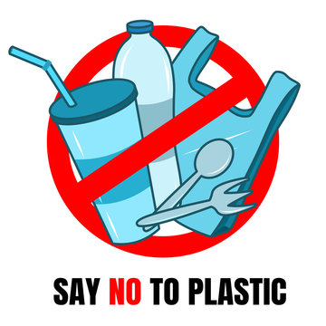
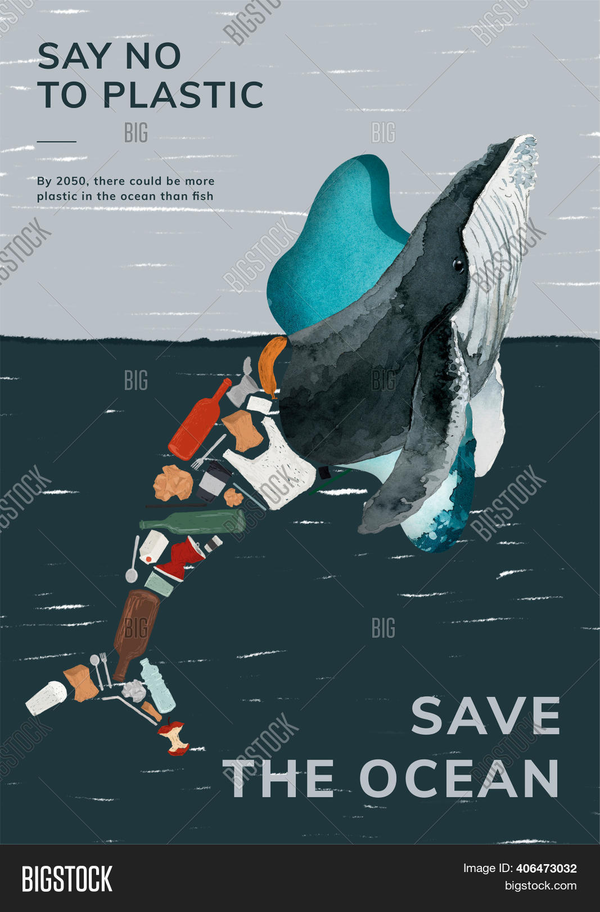

On the day1, my team and I were looking for a good village and then we came across DEVISPET. So we decided to do our csp project there and the whole week 1 went on taking permissions from respected authorities of that particular village On second and third week of our project we did survey with people living in devispet. And I came across a lot of isssues regarding the ANTI-PLASTIC of the village . On the fourth week I really looked for the root cause of that particular health and hygiene problems. On fifth week we are really hoping to slove the issuses of the people on their ANTI-PLASTIC.
The term "anti-plastic" can refer to various movements or initiatives aimed at reducing the use of plastic or eliminating its negative impact on the environment. Here are some reasons why people advocate for anti-plastic efforts:
Environmental Impact
Human Health Concerns
Resource Depletion
Waste Management Challenges
Promoting Sustainable Alternatives

